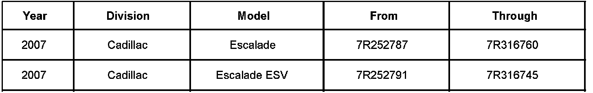
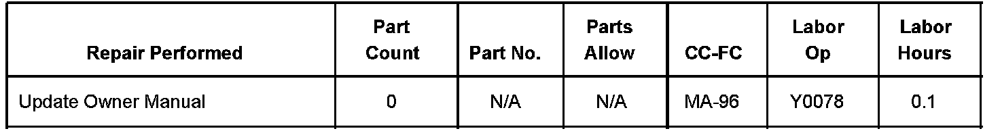

Campaign - Home Remote System Programming Instructions: Overview
Bulletin No.: 06211Date: January 25, 2007
CUSTOMER SATISFACTION
Subject:
06211 - Owner Manual Update - Universal Home Remote System
Models:
2007 Cadillac Escalade, Escalade ESV
With Universal Home Remote System - Three Round LED Design
THIS PROGRAM IS IN EFFECT UNTIL MARCH 31, 2007.
Condition
Certain 2007 Cadillac Escalade and Escalade ESV vehicles equipped with the three round LED design of the Universal Home Remote System may be missing the correct programming instructions in the owner manual. The customer will not be able to program this system correctly by using the instructions in the owner manual.
Note:
The French version of the owner manual contains the correct programming instructions.
Correction
Dealers are to place an owner manual supplement, which contains programming instructions, in the English version of the owner manual of vehicles in inventory. An owner manual supplement will be sent to customers of record.
Vehicles Involved

Involved are certain 2007 Cadillac Escalade and Escalade ESV vehicles equipped with the three round LED Universal Home Remote System and built within the VIN breakpoints shown.
Dealers are to confirm vehicle eligibility prior to beginning repairs by using GMVIS. Not all vehicles within the above breakpoints may be involved. For dealers with involved vehicles, a listing with involved vehicles containing the complete vehicle identification number, customer name, and address information has been prepared and will be provided through the applicable system listed below. Dealers will not have a report available if they have no involved vehicles currently assigned.
- US dealers - GM DealerWorld Recall Information
- Canadian dealers - GMinfoNet Recall Reports
- Export dealers - sent directly to dealers
The listing may contain customer names and addresses obtained from Motor Vehicle Registration Records. The use of such motor vehicle registration data for any purpose other than follow-up necessary to complete this program is a violation of law in several states/provinces/countries. Accordingly, you are urged to limit the use of this report to the follow-up necessary to complete this program.
Parts Information
Owner manual supplements required to complete this program on vehicles in dealer inventory will be pre-shipped to dealers beginning the week of January 22, 2007. These supplements are being provided at no-charge. If additional supplements are required, follow the appropriate instructions below.
U.S. dealers: Order item number 06211OwnerManInsert through the GM DealerWorld.
Canada dealers: Contact GM Canada WINS Assistance Centre.
Service Procedure
Place an owner manual supplement into the owner manual.
Claim Information

Submit a Product Claim with the information shown.
Refer to the General Motors WINS Claims Processing Manual for details on Product Recall Claim Submission.
Customer Notification - For US and Canada
General Motors will notify customers of this program on their vehicle (see copy of customer letter shown in this bulletin).
Customer Notification - For Export
Letters will be sent to known owners of record located within areas covered by the US National Traffic and Motor Vehicle Safety Act. For owners outside these areas, dealers should notify customers using the sample letter shown.
Dealer Program Responsibility
All unsold new vehicles in dealers possession and subject to this program must be held and inspected/repaired per the service procedure of this program bulletin before customers take possession of these vehicles.
Dealers are to service all vehicles subject to this program at no charge to customers, regardless of mileage, age of vehicle, or ownership, through March 31, 2007.
Customers who have recently purchased vehicles sold from your vehicle inventory, and for which there is no customer information indicated on the dealer listing, are to be contacted by the dealer. Arrangements are to be made to make the required correction according to the instructions contained in this bulletin. A copy of the customer letter is shown in this bulletin for your use in contacting customers. Program follow-up cards should not be used for this purpose, since the customer may not as yet have received the notification letter.
In summary, whenever a vehicle subject to this program enters your vehicle inventory, or is in your dealership for service through March 31, 2007, you must take the steps necessary to be sure the program correction has been made before selling or releasing the vehicle.

Disclaimer